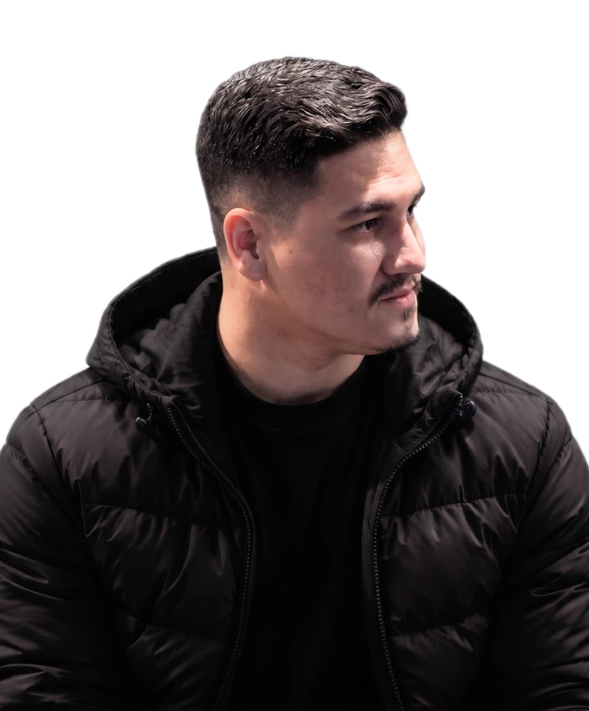

Ajudo escritórios a organizar posicionamento, presença digital e marketing com sobriedade, respeitando o Código de Ética.
Situações comuns que eu vejo na comunicação jurídica.
Um processo direto, com cuidado ético.

Sou o Gustavo Lara. Há 17 anos trabalho com design, comunicação e marketing. Atendo muitos advogados e escritórios e sigo critérios sóbrios de comunicação jurídica.
Você fala direto comigo, do diagnóstico à execução.
Preencha e eu entro em contato pelo WhatsApp.
Vou abrir o WhatsApp para a gente combinar o melhor horário.
Abrir WhatsAppA comunicação segue o Código de Ética e o Provimento 205/2021: caráter informativo, sem promessa de resultado nem captação indevida. Confira sempre com a sua seccional.
Não. Marketing jurídico não pode prometer resultado. O foco é clareza e presença profissional.
A primeira conversa não tem custo nem compromisso.